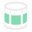
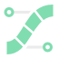

RetopoFlow 3.1.0

Contours

PolyStrips
Documentation
Welcome!
Table of Contents
Quick Start Guide
General
Active Tool
Windows
Minimize Tools
Show Options
Show Poly Count
Report Issue
Exit
Options
General
Quit Options
Confirm quit on Tab
Escape to quite
Start Up Checks
Check Auto Save
Check Unsaved
Advanced
Display
Target Cleaning
Symmetry: (none)
Contours
PolyStrips
Poly Count
Verts:
0
Edges:
0
Faces:
0
RetopoFlow Help System
Foo Bar
Table of Contents
View Online Docs
Close (Esc)